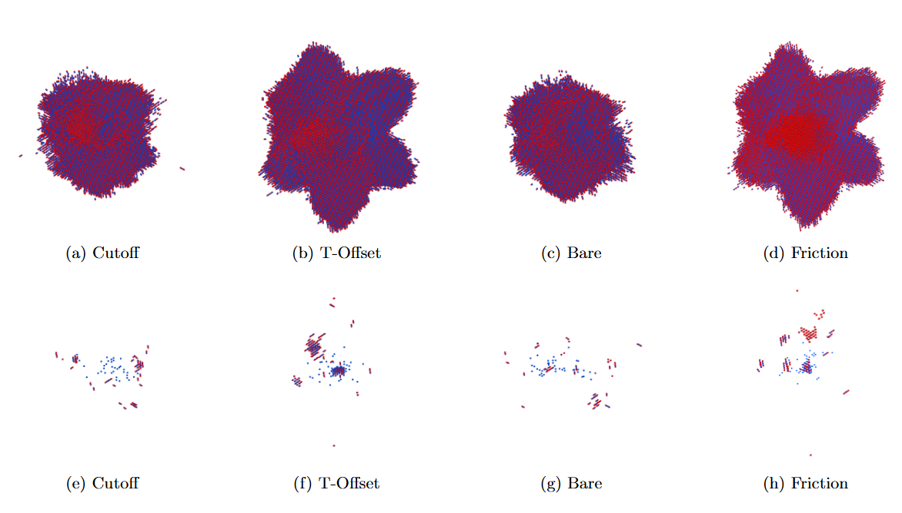

A modified two temperature molecular dynamics (2T-MD) model for cascades

Abstract
Two-Temperature molecular dynamics (2T-MD) is a common approach for describing how electrons contribute to the evolution of a damage cascade by addressing their role in the redistribution of energy in the system. However, inaccuracies in 2T-MD’s treatment of the high-energy particles have limited its utilisation. Here, we propose a reformulation of the traditional 2T-MD scheme to overcome this limitation by addressing the spurious double-interaction of high-energy atoms with electrons. We conduct a series of radiation damage cascades for 30, 50, and 100 keV primary knock-on atoms in increasingly large cubic W cells. In the simulations, we employ our modified 2T-MD scheme along with other treatments of electron–phonon coupling to explore their impact on the cascade evolution and the number of remnant defects. The results suggest that with the proposed modification, 2T-MD simulations account for the temperature time evolution during the ballistic phase and remove arbitrary choices, thus providing a better description of the underlying physics of the damage process.
Back